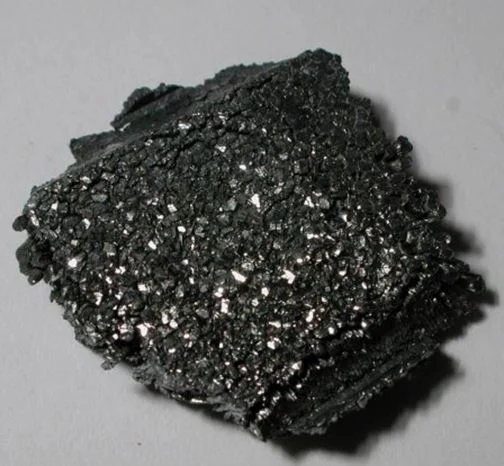

Астат
Аста́т (химический символ — At, от лат. Astatium) — радиоактивный химический элемент 17-й группы (по устаревшей классификации — главной подгруппы седьмой группы, VIIA) шестого периода периодической системы химических элементов Д. И. Менделеева с атомным номером 85.Астат — самый редкий природный элемент периодической системы, поэтому он был синтезирован искусственно до того, как обнаружен в природе. Во всей земной коре его насчитывается не более 1 грамма. Из-за сильной радиоактивности его не удаётся получить в макроскопических количествах, достаточных для глубокого изучения его свойств.
Впервые астат был получен искусственно в 1940 году Д. Корсоном, К. Р. Маккензи и Э. Сегре (Калифорнийский университет в Беркли). Для синтеза изотопа 211At они облучали висмут альфа-частицами. В 1943—1946 годах изотопы астата были обнаружены в составе природных радиоактивных рядов (см. ниже). Название элемента произошло от др.-греч. ἄστατος — «неустойчивый». В русской терминологии элемент до 1962 года назывался «астатин».

Астат получают только искусственно. В основном изотопы астата получают облучением металлических висмута или тория α-частицами высокой энергии с последующим отделением астата соосаждением, экстракцией, хроматографией или дистилляцией.Астат получают только искусственно. В основном изотопы астата получают облучением металлических висмута или тория α-частицами высокой энергии с последующим отделением астата соосаждением, экстракцией, хроматографией или дистилляцией. Ученые пока не придумали область для его применения. Сказалось незначительное его количество и ограниченность в исследованиях.